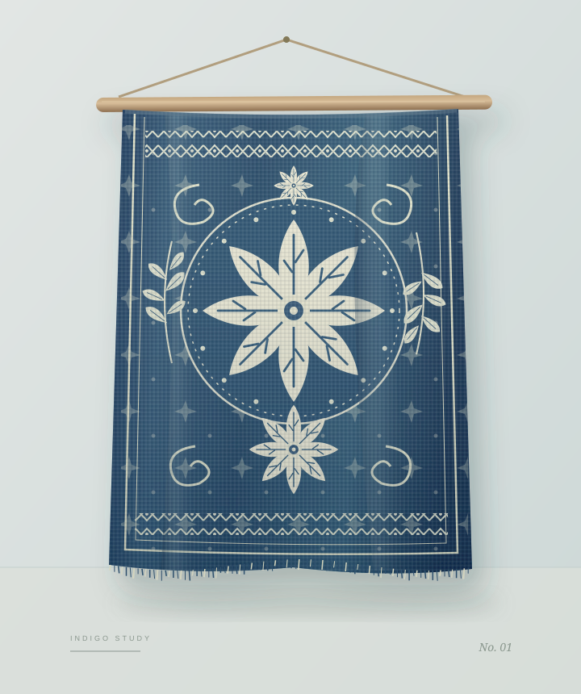
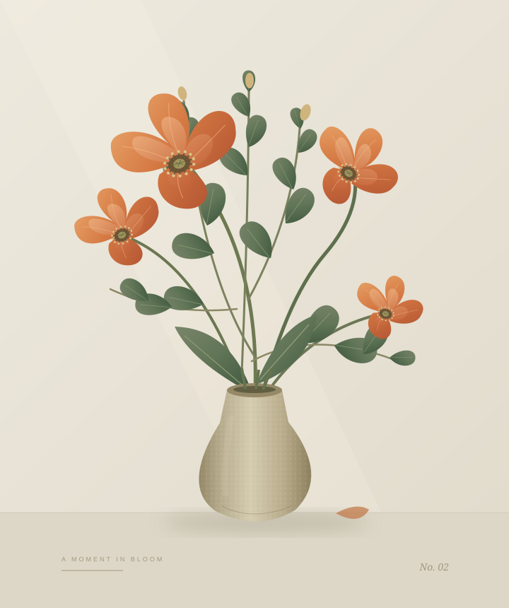

THE ART OF SLOW LIVING — VOL. 01
01 / 草木之间，一抹靛蓝BATIK
02 / 留住一枝春FLORAL
用一点时间，交换一件独一无二。


THE INTERACTIVE COLLECTION
选一种心情，做一件喜欢的事。
两种手艺，无限灵感。
你的下一件作品，从这里开始。
WHY WE MADE ART TAP
不必成为艺术家，
也能拥有创作的片刻。
我们相信，美不只属于展柜，也藏在亲手尝试的过程里。
Art Tap 把传统手作搬进屏幕，让每一次轻触，都成为与艺术的相遇。